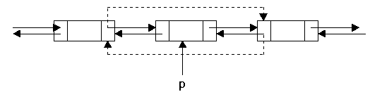
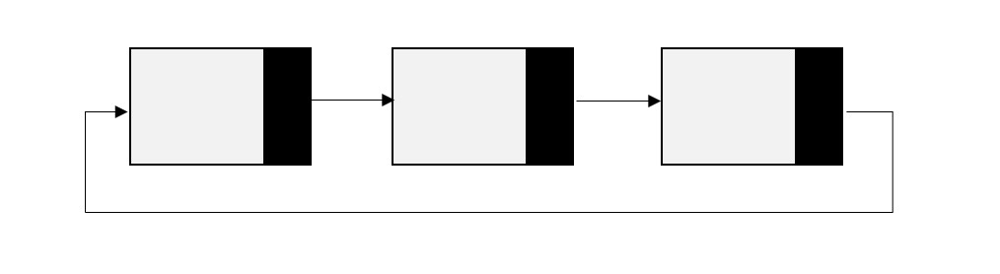

Listas Sencillas
En la estructura de dato se conocen algunos términos los cuales son de vital importancia que el usuario conozca, un ejemplos de ellos son los siguientes tales como: Una lista enlazada o encadenada es aquella que nos agiliza el almacenamiento de datos
de tal forma que este organizada esta es similar a los vectores una diferencia entre estos dos es que la lista posee una estructura dinámica esto hace que no sea tan fundamenta (no significa que no lo sea) saber a priori los elementos que
puede llegar a contener.
Una lista enlazada cada uno de sus elementos apunta al que le sigue, pero menos el que esta ubicado en la última posición ya que no tiene sucesor, puesto a esto el valor es null. Por esto mismo los elementos que la contienen se registran los elementos
que contenedores del dato a almacenar y su respectivo enlace del siguiente. Por lo general estos reciben el nombre de nodos de lista.
| Ventajas |
Incovenientes |
|
Tiene un criterio claro para la inserción y extracción de elementos.
|
Si el algoritmo o requerimiento no necesita de criterio de prioridad, existen otras estructuras que podrían manejar de manera más efectiva lo solicitado.
|
Listas Doblemente Enlazadas
A estos términos las acompañan las listas doblemente enlazadas las cuales es un tipo de dato abstracto (TDA) de manera dinámica y lineal pero como es doblemente enlazada tiene su diferencia la cual es que cada nodo de lista tiene dos punteros como su
nombre lo dice (doble) de tal forma que cada uno apunta al siguiente nodo y el restante al predecesor. Esta característica tiene una ventaja la cual es que se puede manejar o recorrer en doble sentido lo cual no se puede hacer en una lista
simple.
Estas listas están acompañadas por las colas la cual es una estructura donde al entrar el primer elemento este mismo es el que primero sale a esto se le llama FIFO que quiere decir (First in, First Out). Esta estructura de datos se puede
definir como una lista enlazada con acceso FIFO a la que sólo se tiene acceso al final de la lista para meter elementos y al principio de esta para sacarlos.
Una lista doblemente enlazada se puede representar de la siguiente manera:

En esta imagen se nota que el nodo del inicio tiene un apuntador anterior hacia nulo, de la misma forma el ultimo nodo tiene el apuntador al nudo siguiente que es nulo.
| Ventajas |
Incovenientes |
|
Estas listas son convenientes en el desarrollo de aplicaciones donde los usuarios quieren acceder a los elementos en este caso (nodos) en el orden deseado, para ello son las listas dobles.
|
A la hora de codificar se puede volver complejo y ocupa un espacio considerable de memoria. |
Listas Circulares Encadenadas
Una lista circular es un conjunto de datos que poseen similitud a las listas enlazadas simples, pero con características adicionales como es el desplazamiento dentro de ella este no tiene fin, ya que sus datos tienen un orden el cual cada nodo apunta
al siguiente y el ultimo apunta al primero en vez de apuntar al null, esto es lo que la hace diferente a las demás listas. En este tipo de listas no existe ningún tipo de posibilidad donde se pueda desplazar se llegue a una determinada posición
la cual no tenga manera de llegar según su orden, cosa que si se puede en la doble enlazada. La estructura se puede representar de la siguiente manera.

| Ventajas |
Incovenientes |
|
Esta tiene como ventaja recorrer la estructura no dependiendo de un punto en especifico junto con esto tiene la facilidad de acceder al primer nodo mediante el puntero siempre de igual manera al último nodo.
|
Al no tener un cuidado a la hora de buscar un dato ya que la lista el circular se puede generar un bucle infinito para evitar eso se recomienda determinar un punto inicial o como cabeza.
|